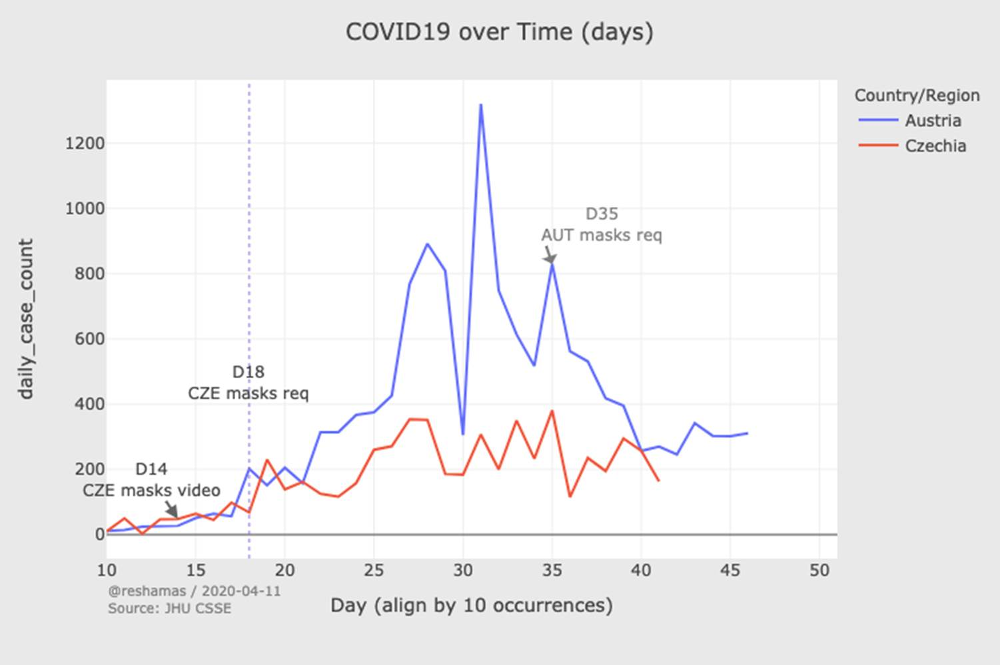

|
Herkes için maske? Bilim evet diyor. 13 Nisan 2020’de Profesör Trisha Greenhalgh ve Jeremy Howard tarafından yazılmıştır. Makalenin orijinali için buraya tıklayın
Maske takma konusunda kafanız mı karıştı? Tabii, karmaşık. Fakat bazı insanların ima ettiği kadar da karmaşık değil. Bizler bunun bilimine bakıyoruz (ekteki makaleye bakın - Face Masks Against COVID-19: An Evidence Review – 84 farklı bilimsel kaynaga atıfla, -- ve Face Masks Against COVID-19: An Evidence Review). İşte farklı kanıtların bir özeti ve her şeyin ne anlama geldiği konusunda bizim görüşlerimiz.
Hastalık yayılımının epidemiyolojisi Muhtemelen, tek bir öğenin büyük bir çağlayanı ateşlediği yakın yerleştirilmiş domino taşlarını ve fare kapanı videolarını gördünüz. Her bulaşıcı hastalığın bulaşma hızı vardır (R0). R0 değeri 1.0 olan bir hastalık, enfekte olmuş her kişinin ortalama olarak bir kişiye bulaştığı anlamına gelir. R0 değeri 1.0'dan az olan bir hastalık zamanla kaybolup gidecektir. 1918 pandemisine neden olan grip hastalığının R0 değeri 1.8 idi. COVID-19'a neden olan virüsün R0'ı, Imperial College araştırmacıları tarafından 2.4 olarak tahmin edildi, ancak bazı araştırmalar 5.7 kadar yüksek olabileceğini düşünüyor. Bu, kontrol önlemleri olmadan COVID-19'un çok hızlı ve hızlı yayılacağı anlamına gelir. Önemli olarak, COVID-19 hastaları hastalığın ilk günlerinde en bulaşıcıdır (To 2020; Zou 2020; Bai 2020; Zhang 2020; Doremalen 2020; Wei 2020) Hastalar bu sırada genellikle çok az semptom gösterirler veya hiç göstermezler. Damlacıkların ve aerosollerin fiziği Konuştuğunuzda, küçük mikro damlacıklar ağzınızdan saçılır. Bulaşıcıysanız, bunlar virüs parçacıkları içerir. Sadece en büyük damlacıklar, kurumadan ve orijinal damlacıktan 3-5 kat daha küçük olan, ancak hala bir miktar virüs içeren damlacık çekirdeğine (Wells 1934; Duguid 1946; Morawska et al. 2009) dönüşmeden önce 0.1 saniyeden fazla hayatta kalır. Bu, damlacıklar ağzınızdan çıktığında yani çok daha büyük olduklarında engelemeye çalışmak, damlacıkların enfekte olmayan bir kişinin yüzüne yaklaştıklarında engellemeye çalışmaktan çok daha kolay olduğu anlamına gelir. Ama çoğu araştırmacının baktığı şey bu değil...Maskelerin Malzeme Bilimi Maskelerin etkinliği hakkındaki tartışmalar genellikle maskenin amacının kullanıcıyı korumak olduğunu varsayar, çünkü tüm doktorların tıp fakültesinde öğrendiği şey budur. Kumaş maskeleri bu konuda nispeten zayıftır (ancak tamamen etkisiz olmasa da). %100 koruma için, kullanıcının uygun şekilde takılmış bir tıbbi solunum cihazına (mesela N95 maskesi) ihtiyacı vardır. Ancak enfekte olmuş bir kişi tarafından giyilen kumaş maskeleri, etraflarındaki insanları koruma konusunda oldukça etkilidir. Buna “kaynak kontrolü” denir. Ve halkın maske takması gerekip gerekmediği tartışmasında önemli olan kaynak kontrolüdür.COVID-19 hastaliginiz varsa ve 20cm uzaklıktan birine öksürüyorsanız, pamuktan yapilmis maske takmak, o kişiye ilettiğiniz virüs miktarını 36 kat azaltır bu cerrahi maskeden daha etkilidir. Tuhaf bir şekilde, bu gerçeği keşfeden araştırmacılar 36 kat azaltmayı “etkisiz” olarak değerlendirdiler. Biz bu goruşe katilmiyoruz. Bu, aksi takdirde yapmış olacağınız virüs miktarının sadece 1/36'sını aktaracağınız anlamına gelir, viral yükü azaltır, bu da muhtemel bir enfeksiyonun daha düşük bir olasılıkla ve daha az semptom göstermesine yol acabilir.
iletimin Matematigi Ekibimiz tarafından yapilmis ve diğer modellerle desteklenen matematiksel modelleme (Yan 2019) çoğu insanın halka açık yerlerde maske takması durumunda iletim oranının (“etkili R”) 1.0'ın altına altına düşerek hastalığın yayılmasını tamamen durdurabileceğini göstermektedir. Maskenin her bir viral parçacığı bloke etmesi gerekmez, ancak ne kadar çok parçacık bloke olursa etkili R (bulaşma hızı) o kadar düşük olur.
Maske kullanımının üreme oranı üzerine modellenmiş etkisi Maske takmanın ne kadar etkili olduğu yukaridaki şemada gösterilen üç şeye bağlıdır: maskenin virüsü ne kadar iyi bloke ettiği ("Etkinlik": yatay eksen), halkin yüzde kaçi maske takar (“bağlılık”: dikey eksen), ve hastalığın bulaşma hızı (R0: grafikteki siyah çizgiler). Grafiğin mavi alanı, 1.0'ın altındaki bir R0'ı gösterir; bu, hastalığı silmek için elde etmemiz gereken şeydir. Eğer taktigimiz maske parçacıkların %100'ünü (grafiğin en sağında) bloke ederse, düşük bağlılık oranları bile hastalığın sınırlanmasına yol açacaktır. Eğer maskeler viral partiküllerin çok daha düşük bir oranını engellese bile, hastalık hala sınırlandırılabilir - ancak bu sadece insanların çoğu veya tamamının maske takmasıyla olur. Maske takmanin siyaset bilimi Tüm insanların veya çoğunun maske takmasını nasıl sağlanabilir? Onları eğitebilir ve ikna etmeye çalışabilirsiniz, ancak daha etkili bir yaklaşım, ya halka acik toplu taşıma veya market gibi belirli ortamlarda veya ev dışında her zaman bir maske takmalarını mecbur kılabilirsiniz. Aşı araştırmaları (Bradford and Mandich 2015), aşı muafiyetleri için daha yüksek bir sınır oluşturan bölgelerinin daha yüksek aşılama oranlarına sahip olduğunu göstermektedir. Aynı yaklaşım şimdi maske takma uyumunu arttırmak için kullanılmaktadır ve ilk sonuçlar bu yasaların COVID-19'un uyumluluğunu arttırmak ve yayılmasını yavaşlatmak veya durdurmak için etkili olduğunu göstermektedir.Maske takma deneyleri: yapay ve doğal Yapay bir deney, bir araştırmacının insanları (genellikle rastgele, bu nedenle RTC denir) maske takmaya veya maske takmamasına (kontrol grubu) ayırmasıdır. COVID-19 icin halk tarafindan yapilmis herhangi bir RTC bulunmamaktadir. Diğer hastalıkları (grip veya tüberküloz gibi) önlemek için maske takan RTC'ler, birçok çalışmada istatistiksel olarak anlamlı olmayan küçük bir etki gösterme eğilimindedir. Bu tür çalışmaların çoğunda, maske takan gruba atanan insanlar her zaman maskelerini takmadılar. Doğal bir deney, gerçekten olan bir şeyi incelediğimizde, örneğin bir ülke maske takma politikasını uygulamaya koyduğunda ortaya cikmaktadir. Örneğin Güney Kore, ilk haftalarda İtalya'daki yörüngeyi takip eden hızlı topluluk yayılımına sahipti. Daha sonra, Şubat 2020'nin sonlarında hükümet her vatandaşa düzenli olarak maske tedarik etti. O andan itibaren her şey değişti. İtalya’nın ölüm sayısı korkunç seviyelere ulaştıkça Güney Kore’nin gerçekte azalmaya başladı. İşte Güney Kore’nin aktif vaka sayısı (kırmızı) ve İtalya’nın (mavi); maske dağıtımının etkisi başladığı için Mart ayı başlarında neler olduğuna yakından bakın (Bu Güney Kore analizi Hyokon Zhiang ve görseller Reshama Shaik tarafından hazirlanmistir):
Kore ve İtalya arasındaki COVID-19 vakalarının karşılaştırılması
Doğal deneyler bilimsel olarak kusurludur, çünkü doğrudan kontrol grubu yoktur, bu nedenle herhangi bir değişikliğin maskelerden kaynaklandığından emin olamayız. Maske takan bazı ülkelerde, katı sosyal mesafe uygulanmasi, okulun kapatılması ve halka açık etkinliklerin iptali gibi diğer önlemler de aynı zamanda gerçekleşti. Bu durumlarda bile, ilgili karşılaştırmalar bulabiliriz. Örneğin, Avrupalı komşular Avusturya ve Çekya aynı tarihte sosyal mesafelendirme gereklilikleri getirdiler, ancak Çekya da zorunlu maske takma işlemlerini başlattı. Avusturya hasta oranı, Çek Cumhuriyeti düzleşirken yukarı yönlü seyrini sürdürdü. It wasn’t until Austria also introduced mask laws weeks later that the two counties returned to similar trajectories.  Çekya ve Avusturya arasındaki COVID-19 vakalarının karşılaştırılması Daha da önemlisi, maske kullanımının yasalarla teşvik edildiği veya vatandaşlara maskelerin verildiği her ülkede ve her zaman döneminde vaka ve ölüm oranları düşmüştür. Maske takmanın davranış bilimi Bazıları insanların maske takma zorunlulugunun (veya şiddetle cesaretlendirmesini) riskli davranışları teşvik edeceğini iddia etmekteler (Brosseau 2020) (örneğin, daha fazla dışarı çıkmak, daha az el yıkamak) bu da net bir negatif sonuç ile sonuçlanır ve bu etki bazı deneysel deney çalışmalarında görüldü. HIV önleme stratejileri (Cassell 2006; Rojas Castro, Delabre, and Molina 2019) ve motosiklet kask yasaları (Ouellet 2011) için benzer tartışmalar daha önce yapılmıştı. Bununla birlikte, bu konulardaki gerçek dünya araştırmaları, bazı bireyler riskli davranışlarla yanıt vermesine rağmen, nüfus düzeyinde güvenlik ve refahta genel bir iyileşme olduğunu buldu (Peng et al. 2017; Houston and Richardson 2007).Maske takmanın ekonomisi Ekonomik analizler, eğer sağlandıkları takdirde maskelerin ne kadar (hem finansal hem de finansal olmayan) deger yaratabileceği ve potansiyel olarak ne kadar deger kaybedilebileceğini dikkate alarak, maliyetini hesaplarlar. Bu tür ekonomik çalışmalar (Abaluck 2020), bir kişinin giydiği (neredeyse hiçbir maliyeti olmayan) her maskenin binlerce dolara ekonomik fayda sağlayabileceğini ve birçok hayat kurtarabileceğini göstermektedir.
Maske takmanın antropolojisi Halk tarafından maske takılması, çoğu Asya ülkesinde kısmen kisisel nedenlerden (kirliliğe karşı korunmak için) ve kısmen de kolektif nedenlerden (yakın zamanda MERS ve SARS salgınlarının bir sonucu olarak) normalleştirilmiştir. Benim maskem seni korur; seninki beni korur. Bununla birlikte, bu ülkelerin çoğunda norm sadece semptomlarınız varsa maske takmak olmuştur; sadece son haftalarda, asemptomatik yayılma farkındalığı daha iyi anlaşıldığından, semptomlardan bağımsız olarak maskenin giyilmesi yaygınlaşmıştır.Sonuç
Her bir bilimsel kanıt maske takmayı desteklemese de, çoğu aynı yöne işaret ediyor. Bu kanıtları değerlendirmemiz bizi net bir sonuca götürüyor: damlacıklarınızı kendinize saklayın - bir maske takın. Evde bir tişört, mendil veya kağıt havludan bir evde maske yapabilir veya hatta yüzünüzün etrafına bir eşarp veya bandana sarabilirsiniz. İdeal olarak, hala nefes alabileceğiniz sıkı dokuma kumaş kullanın. Araştırmacılar, tek kullanımlık bir filtre olarak bir kağıt havlu tabakası eklemenizi önerir; iki kat kumaş arasında kolayca kaydırabilirsiniz. Maskenizin, kaynak kontrolü için etkili olabilmesi için herhangi bir uzmanlıkla veya özenle yapılması gerektiğine dair kanıt yoktur. Tıpkı bir tişörtü tekrar kullandığınız gibi, çamaşırlarla birlikte bez maskeyi yikayabilir ve yeniden kullanabilirsiniz. COVID-19'u kuluçkaladığınız ortaya çıkarsa, önem verdiğiniz insanlar sizin maske takmanızdan memnun olacaktır. Özet: Jeremy’nin Kaynak Kontrol Örneği İşte Jeremy'nin kaynak kontrolünün küçük bir örneği!
Referanslar
|